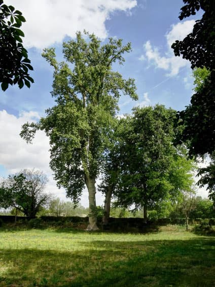

Si existen unos árboles especiales entre los Singulares de Aranjuez son los Plátanos de la Tronca. Situados en el interior del Jardín de la Isla, tienen la facultad de ser dos especies en una. Se trata de dos árboles clasificados como uno solo y Singular, según la Comunidad de Madrid. Son en realidad un Platanus hispanica y un Platanus orientalis unidos desde la parte basal.

Traduciendo al cristiano la historia para entendernos: inicialmente los plátanos de sombra (ojo, no dan plátanos, que conste) eran árboles de dos tipos: Platanus orientalis y Platanus occidentalis, según sus nombres latinos. Estos se fueron hibridando (mezclando) de manera natural con el paso de los siglos y de ambos surgió el llamado Platanus hispanica o plátano de sombra propiamente dicho (algunos los llaman “plataneros”). Se dice que muchos de ellos surgieron en la Península Ibérica, por eso lo de “hispanica”.
Actualmente la mayor parte de los árboles de esta especie son de este tipo, y los “puros” es difícil encontrarlos. Por otra parte, así ocurre con la mayor parte de las especies más utilizadas en los jardines, como los olmos, chopos o tilos. La mezcla en los individuos los consigue adaptarse a los cambios del medio, tan complicados a veces. Adaptarse o morir, ya se sabe. En este caso, tenemos la suerte de tener estos Plátanos de la Tronca, los árboles singulares más especiales, en nuestros jardines. Un observador concienzudo apreciará rápidamente algunas diferencias. Sutiles, pero diferencias si nos fijamos un poco, sobre todo en la hoja o el tronco. Según parece, además, tiene (o tienen) una edad de más de 200 años, por lo que podemos considerarlo un ejemplar único.
Árbol Singular de la Comunidad de Madrid Nº 156
Plátanos de la Tronca. Platanus x hispanica. Altura: 50 y 24 metros. Diámetro de copa: 35 metros. Perímetro del tronco: 6,50 y 3,95 metros. Edad aproximada: 220 años. Altitud: 491 metros.
Acceso: Al norte del Jardín de La Isla. En la calle de la Reina Regente, en el talud izquierdo de la calle. Nada más pasar el Plátano de la Huerta del Infante. La peculiaridad de este ejemplar radica en que son dos árboles unidos por la raíz.